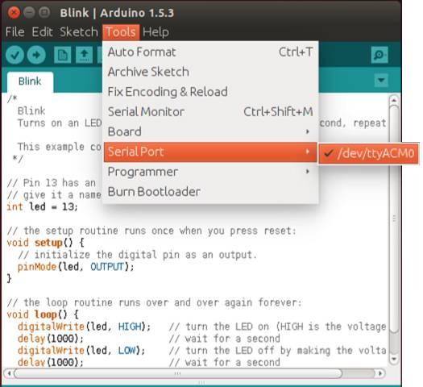
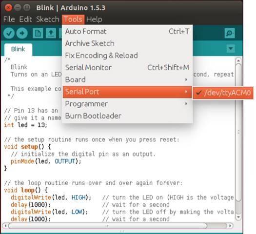

Finding your port on a system with Linux
-
Find the port for your board, which is likely to be /dev/ttyACM0.

-
Once you have selected your port, continue to upload the sketch to your board.
Find the port for your board, which is likely to be /dev/ttyACM0.

Once you have selected your port, continue to upload the sketch to your board.